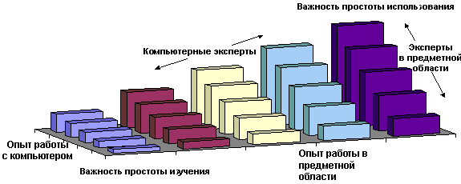
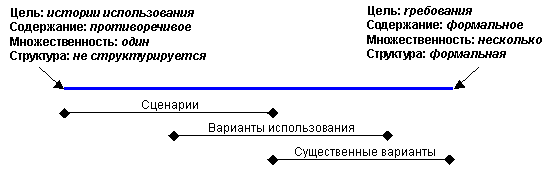

| Концепция: Проектирование с учетом потребностей пользователей |
 |
|
Что такое проектирование с учетом потребностей пользователей?Проектирование с учетом потребностей пользователей не является четко сформулированной парадигмой. В 1980 году сотрудник IBM Джон Гульд вместе с коллегами предложил подход Проектирование для удобства работы [GOU88], в котором и были сформулированы принятые ныне определения. Этот подход был основан на практическом опыте ряда интерактивных систем, наиболее заметной из которых была система IBM информационного обслуживания Олимпийских игр 1984 года [GOU87]. Этот подход включает в себя четыре основных компонента, которые описаны далее. Главное - это пользовательГульд предложил разработчикам сразу определить круг пользователей продукта и включить их в процесс разработки на самой ранней стадии. Для знакомства с пользователями, их требованиями и задачами, он предложил ряд способов:
В Rational Unified Process (RUP) на важных этапах работы применяются совещания, но они должны быть дополнены и другими указанными Гульдом видами деятельности, чтобы сложилась полная картина. Частично это связано с тем, что люди склонны описывать то, что они делают, не так, как они фактически это делают. Часто упускаются привычные задачи и детали, которые кажутся незначительными и не относящимися к делу, например, размещение задания или загадочные листки бумаги. Интеграция с проектированиемЗадачи обеспечения удобства работы должны выполняться, начиная с ранних этапов разработки. В их число может входить примерный набросок пользовательского интерфейса или черновик руководства пользователя и электронной справки. Гульд указывает, что за удобство работы должна отвечать одна группа. Отличительной особенностью интегрированного проектирования является ранняя разработка и тестирование эскиза пользовательского интерфейса. Это важное отличие между проектированием с учетом потребностей пользователей и прочих инкрементных методик. Тем самым обеспечивается плавное включение эскиза в общий ход разработки и согласованность пользовательского интерфейса на всех этапах в том, что касается оформления, терминологии и концепций. В RUP эта цель достигается благодаря модели доменов, которая обеспечивает, что все термины и концепции пользовательского интерфейса будут известны как в среде организации, так и среди пользователей. В модели доменов могут быть области, относящиеся только к определенным группам пользователей. Поэтому к созданию модели доменов нужно подойти внимательно, чтобы выделить такие области. По мере разработки пользовательского интерфейса многие классы доменов будут принимать очертания элементов пользовательского интерфейса. Элементы пользовательского интерфейса и их взаимосвязи должны быть согласованными в модели доменов и выступать единообразно во всех частях проектируемой системы. Помимо того, что это упрощает работу пользователей, это также способствует созданию компонентов с возможностью повторного использования. Ранее участие пользователей в тестированииРанее участие пользователей в тестировании предполагает создание набросков и простых прототипов на ранних стадиях разработки. Более качественные прототипы будут созданы позднее. Такие наброски можно использовать вместе с вариантами использования, чтобы обозначить сценарии применения проектируемой системы. Они могут быть текстовыми или иллюстрированными фрагментами пользовательского интерфейса. Наброски, раскадровки и группы учета потребностей пользователей могут быть незнакомыми для разработчиков программного обеспечения. Однако эти подходы позволяют сэкономить много средств по сравнению с ситуацией, в которой неверные проектные решения или неправильно понятые требования обнаружены уже в ходе разработки. Итерационное проектированиеОбъектно-ориентированная разработка стала синонимом итерационного процесса. Итерационное проектирование хорошо подходит для задач, в которых требуется уточнение понимания и требования могут изменяться. Поэтому итерационное проектирование является ключом для проектирования с учетом потребностей пользователей. Частично это обусловлено изменением потребностей пользователей, но еще и самой сложностью проектных задач в изменяющихся условиях. Обратите внимание, что в методах с учетом потребностей пользователей итерационное проектирование имеет место в интегрированной среде. Мы намеренно избегаем инкрементной разработки вне обозначенных рамок, которые могли бы привести к "заплаточным" решениям. Почему применяется проектирование с учетом потребностей пользователей?Ответ на потребности пользователейИнтерактивные системы достигают успеха за счет ответа на потребности пользователей. Это подразумевает не только определение целевых аудиторий пользователей, но еще и определение уровней навыков, опыта и предпочтений отдельных пользователей. Разработчики и руководители склонны обманывать себя тем, что они понимают, что нужно пользователям. Они ошибаются. Часто акцент смещается в сторону того, как пользователи должны выполнять задачи, а не как они хотели бы это делать. Во многих случаях вопрос предпочтений не ограничивается только удобством, что само по себе тоже важно. Предпочтения складываются на основе опыта, способностей и контекста использования. Эти вопросы оказались настолько важными, что были отражены в международном стандарте [ISO 13407], озаглавленном Процесс проектирования интерактивных систем, ориентированных на удобство работы. Далее обсуждаются общие вопросы, связанные с этим стандартом. Проектирование пользовательского интерфейсаПользователи видят систему и работают с ней посредством пользовательского интерфейса. Поэтому концепции, изображения и терминология интерфейса должны соответствовать потребностям пользователей. Например, система покупки билетов самими клиентами может очень сильно отличаться от применяемой в профессиональных агентствах. Главное отличие будет заключаться не в вариантах использования, а в особенностях пользователей и среды, в которой будет работать система. Пользовательский интерфейс должен также отвечать двум различным категориям пользователей, отличающимся разной степенью подготовленности в работе с компьютером и в проблемной области, как показано на рисунке 1. Опыт в работе с компьютерами предполагает не только общее знакомство с компьютерами, но и конкретно с разрабатываемой системой. Неопытные пользователи, показанные в нижнем левом углу рисунка, будут работать с пользовательским интерфейсом иначе, чем специалисты и в компьютерах, и в проблемной области, показанные в верхнем правом углу.  Рисунок 1: Влияние опыта работы с компьютерами и в проблемной области на удобство обучения и удобство использования Помните, что нет никаких гарантий, что со временем неопытные пользователи превратятся в опытных. Этому может препятствовать редкое использование, нежелание самих пользователей или сложность системы. Некоторые системы, напротив, предполагают работу в основном со специалистами. Это зависит от обучения, постоянного применения системы или высокой мотивации (например, система может быть необходима для работы). Эти вопросы и их влияние на проектирование пользовательского интерфейса показаны в таблице 1.
Таблица 1. Факторы, влияющие на проектирование пользовательского интерфейса Системы проектируются или для широкого круга пользователей с разным уровнем подготовленности, или для специальной аудитории пользователей. Например, для облегчения обучения работы в сложной системе могут использоваться курсы, Или же система должна быть спроектирована с ограничениями, позволяющими лучше удовлетворить требованиям целевой аудитории пользователей (как предлагает Алан Купер в книге The Inmates Are Running the Asylum [COO99]). Законодательство и стандартыЧастью проектирования с учетом потребностей пользователей является оценка навыков и физических атрибутов пользователей. Эти вопросы находят свое отражение в законодательстве. Чаще всего необходимо обеспечить возможность работы пользователей с физическими ограничениями. Однако обеспечение возможности работы в системе широкого диапазона пользователей считается в целом благоприятным фактором. В таблице перечислены законодательные документы и ресурсы, относящиеся к разным странам и регионам:
Таблица 2a, Законодательные документы, связанные с обеспечением работы лиц с ограниченными возможностями Помимо законодательных актов, проектирование с учетом потребностей пользователей и проектирование пользовательского интерфейса становится предметом стандартизации, как показано ниже.
Таблица 2b, стандарты ANSI и ISO, посвященные разработке пользовательского интерфейса и проектированию с учетом потребностей пользователей Проектирование с учетом потребностей пользователей в RUPРазработка систем, отвечающих потребностям пользователей, требует значительных усилий по анализу требований. В проектировании с учетом потребностей пользователей этот акцент смещается на исследование конечных пользователей. Дисциплина бизнес-моделирования предусматривает моделирование участников бизнес-процесса (внутри бизнес-процесса) и субъектов бизнес-процесса (вне бизнес-процесса). Важным аспектом проектирования с учетом потребностей пользователей является понимание требований реальных людей, которые будут отвечать за роли в упомянутых рабочих продуктах. В особенности необходимо избегать проектирования для вымышленных персонажей, которые облегчили бы проектирование. Рабочие продукты, описывающие пользователей, должны создаваться только после живого и интенсивного общения с пользователями. В проектировании с учетом потребностей пользователей такой живой контакт - это часть процесса, называемого контекстным анализом. В книге Контекстное проектирование [BEY98]) приводится следующее описание: "...идите к клиентам, смотрите, как они работают, беседуйте с ними о том, как они работают." Другие примеры уже были приведены в разделе Все внимание пользователям. Этот подход применяется как для лучшего понимания требований к системе, так и понимания самих пользователей, их задач и среды. Все они обладают своими особенностями и в совокупности называются контекстом использования. Подробнее это описано в стандарте ISO проектирования с учетом потребностей пользователей. Контексты использованияДокумент ISO Human-centered design processes for interactive systems [ISO13407] указывает, что первый этап проектирования - это понимание и уточнение контекста использования. Предлагаются следующие атрибуты:
Таблица 3: контекст использования согласно стандарту ISO проектирования с учетом потребностей пользователей Будет полезно разделить контекст пользователей на две части (типы и роли пользователей) и затем рассмотреть отношение между всеми контекстами:
Рисунок 2: отношения между контекстами На рисунке 2 показано, что задачи выполняются ролями, предоставляемыми пользователям в среде. Эти контексты соответствуют рабочим продуктами RUP, как показано в таблице 4.
Таблица 4, сравнение контекстов стандарта ISO и рабочих продуктов RUP Все эти контексты оказывают заметное влияние на проектирование пользовательского интерфейса. В результате может возникать большое разнообразие ситуаций. Даже в небольшой системе могут быть две среды (например, наше представительство и офис клиента), три типа пользователей (стажер, менеджер по продажам и управляющий) и шесть ролей (секретарь, ответственный за внешние продажи и пр.). Это приводит к 36 вариантам задачи, хотя в реальности это число будет меньше. Задачи могут быть описаны по отдельности, но одно описание не будет адекватным для всех вариантов. Поэтому применяется подход, в котором контексты пользователей и среды приводятся к описаниям ролей. Это решение описано в книге [CON99]. Каждому значимому варианту роли, пользователя и среды сопоставляется отдельная роль пользователя, которая получает развернутое описание вместо простого. Сравните, например, роль "клиент" с ролями "случайный клиент", "web-клиент", "постоянный клиент" и "особый клиент". В описании роли пользователя указываются сведения о роли и о пользователях (на которых возложена роль), а также среде. Этот подход в RUP соответствует выбору субъектов, соответствующих ролям пользователей. Сценарии, варианты использования и сущностные варианты использованияТермины сценарий, вариант использования и сущностный вариант использования применяются не всегда верно, и в разных подходах к проектированию могут означать немного разные вещи. В RUP "сценарий" - это экземпляр варианта использования, один из возможных путей реализации потоков операций. Однако часто в методах проектирования с учетом потребностей пользователей и проектирования пользовательского интерфейса сценарии являются конкретными описаниями со множеством деталей. Эта дополнительная информация, несущественная на более поздних этапах проектирования, может послужить лучшему пониманию пользователей, задачи и среды. Поэтому сценарии широко применяются в дисциплине бизнес-моделирования (в Раскадровке и Ролевом исполнении), но в дисциплине требований фокус смещается на варианты использования. На рисунке 3 проиллюстрировано это смешение понятий. Шкала в верхней части отражает ряд факторов, которые имеют тенденцию изменяться совместно. Например, по мере того как фокус смещается в сторону требований, структура становится более формальной. Сущностные варианты использования показаны правее общих вариантов, поскольку роли пользователя их уточняют, и они имеют более формальную структуру.  Рисунок 3: Наложение концепций сценариев и вариантов использования Различия между общими и сущностными вариантами использования лучше всего иллюстрируются примером. Таблица 5 - это вариант использования, взятый из книги Software for Use [CON99]:
Таблица 5: Вариант использования банкомата В этом примере описана последовательность действий субъекта и системы. Вертикальная черта между столбцами представляет пользовательский интерфейс. Обратите внимание, что хотя в книге этот стиль рекомендуется для сущностных вариантов использования, этот вариант использования - не сущностный. Причина состоит в том, что взаимодействие описано словесно (синтаксис). Тем самым описано, как происходит взаимодействие. Сущностный вариант использования - это описание того, что есть взаимодействие (это называется семантикой). В таблице 6 показана сущностная версия взаимодействия.
Таблица 6: Сущностный вариант использования банкомата Этот вариант использования описывает сущность операции получения наличности. Вместо столбцов Действие пользователя и Ответ системы показаны столбцы Намерение пользователя и Функция системы, чтобы подчеркнуть смещение акцентов. Правильным подходом в проектировании интерфейса будет акцент на целях и намерении пользователей, которые часто не выявлены в общих вариантах использования. Сущностные варианты использования особенно полезны в следующих ситуациях:
Однако сущностные варианты использования имеют и свои недостатки. Непосредственные варианты использования, такие как описанный в таблице 5, могут являться предметов серьезных дискуссий, когда дело доходит до приведения их к сущностному виду. Например, что подлежит идентификации при вставке карты, клиент или счет? В большинстве банкоматов это именно счет, хотя в книге речь идет об идентификации клиента. Этот выбор в книге мог быть сделан в свете новых технологий, таких как идентификация по сетчатке или отпечатку пальца, или же по недосмотру. Так или иначе, это может повлиять на работу с клиентами, у которых есть более одного счета. Другая трудность сущностных вариантов использования состоит в том, что их абстрактный характер не позволяет обсуждать их с пользователями и другими заинтересованными лицами. Частью этой проблемы является необходимость приведения сущностных вариантов использования к конкретной форме с описанием действий пользователя. Это можно будет сделать после подготовки проектной модели, создав сценарии, описывающие взаимодействие в конкретных терминах (подобно концепции реализации варианта использования, но с упором на взаимодействие пользователя и системы, а не на взаимодействие внутренних объектов). Итак, применение сущностных вариантов использования может быть нежелательным в следующих ситуациях:
Сущностные варианты использования в RUPВ RUP нет такого понятия, как сущностные варианты использования. Но в разделе Задача: проектирование пользовательского интерфейса, сущностные варианты использования используются как отправная точка для разработки требований удобства работы и создания раскадровки, как описано в разделе Рекомендация: раскадровка. Это означает, что отбрасываются все детали проектирования или текущей реализации, чтобы оставить только семантику - смысл взаимодействия. Затем, по мере освоения различных альтернатив проектирования, в сущностный вариант использования добавляются подробности, синтаксическое описание того, как происходит взаимодействие. Фактически каждая альтернатива - это реализация одного и того же варианта использования.
Раскадровки затем могут использоваться как входные данные для задачи
создания прототипа пользовательского интерфейса и разработки прототипа пользовательского интерфейса. |
© Copyright IBM Corp. 1987, 2006. Все права защищены.. |